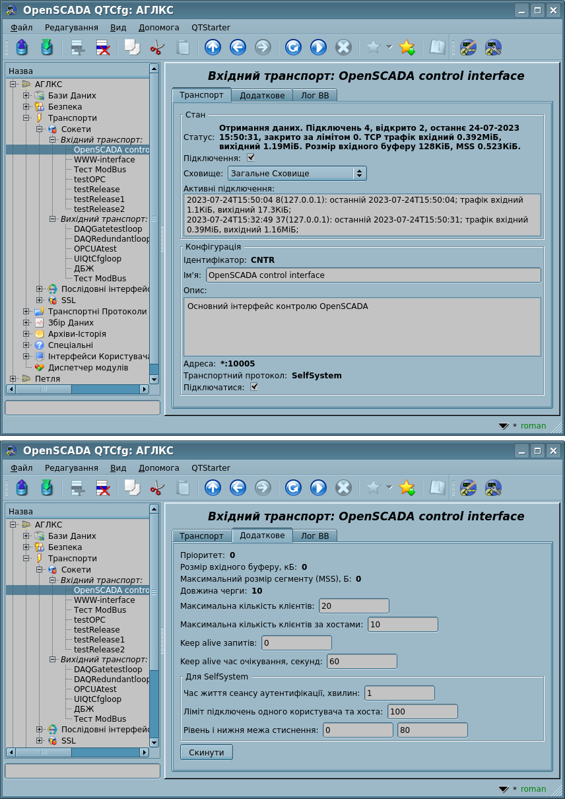

| Модуль |
Ім'я |
Версія |
Ліцензія |
Джерело |
Мови |
Платформи |
Тип |
Автор |
Опис
|
| Sockets |
Сокети
|
3.4 |
GPL2 |
tr_Sockets.so |
en,uk,ru,de |
x86,x86_64,ARM
|
Транспорт |
Роман Савоченко, Максим Кочетков |
Надає транспорт заснований на сокетах. Підтримуються мережеві та UNIX сокети. Мережевий сокет підтримує TCP, UDP та RAWCAN протоколи.
|
Модуль надає до програми підтримку транспортів, заснованих на сокетах. Підтримуються вхідні та вихідні транспорти, основані на мережевих сокетах TCP, UDP, UNIX та RAWCAN.
Додати нові вхідні та вихідні сокети можна за посередництвом конфігурації транспортної підсистеми у будь якому конфігураторі OpenSCADA.
1 Вхідні транспорти
Сконфігурований та запущений вхідний транспорт відкриває серверний сокет для очікування підключення клієнтів, крім ініціативного підключення. У випадку з UNIX сокетом створюється файл UNIX сокету. Сокети TCP та UNIX є багатопотоковими, тобто при підключені клієнту до сокетів цих типів створюється клієнтський сокет та новий потік, у якому відбувається обслуговування клієнту. Серверний сокет, на цей час, переходить до очікування запитів від нового клієнту. Таким чином досягається паралельне обслуговування клієнтів. RAWCAN сокет здійснює прийом CAN кадрів з інтерфейсу згідно до налаштованому фільтру.
Кожний вхідний транспорт пов'язується з одним з доступних транспортних протоколів, якому передаються вхідні повідомлення. Разом з транспортним протоколом підтримується механізм об'єднання шматків розрізнених при передачі запитів.
Діалог конфігурації вхідного сокету зображено на рисунку 1.
 Рис.1. Діалог конфігурації вхідного сокету.
За допомогою цього діалогу можна встановити:
- Стан транспорту, а саме: статус, "Виконується", ім'я БД (яка містить конфігурацію) та інформація про поточні підключення.
- Ідентифікатор, ім'я та опис транспорту.
- Адреса транспорту. Формат адреси описано у таблиці нижче.
- Обрання транспортних протоколів.
 Порожнє значення обрання протоколу перемикає транспорт у режим створення асоційованого вихідного транспорту для кожного підключення на цей вхідний.
Порожнє значення обрання протоколу перемикає транспорт у режим створення асоційованого вихідного транспорту для кожного підключення на цей вхідний.- Режим асоційованих вихідних транспортів для вхідного передбачає наявність деякої зовнішньої до транспорту процедури, яка виконує роль протоколу, та яка має "обходити" всі асоційовані вихідні транспорти, та виконувати запит на читання або запис-читання.
- Відсутність такої процедури неминуче призведе до росту асоційованих вихідних транспортів через відсутність сутності, яка зупиняє транспорти із закритими підключеннями та можливістю наступного видалення зупинених вихідних транспортів цим вхідним.
- Стан "Виконується", у який переводити транспорт при запуску.
- Пріоритет задач транспорту.
- Максимальний розмір сегмента (MSS), для обмеження розміру пакетів що відсилаються (сегментів TCP) на поганих каналах зв'язку. Встановити в 0 для зняття користувацького обмеження розміру.
- Розмір вхідного буферу, Довжина черги сокетів, Максимальна кількість клієнтів та Максимальна кількість клієнтів за хостами (для TCP).
- Keep alive запитів — закриття підключення після визначеної кількості запитів. Нульове значення для вимкнення — не закривається ніколи.
- Keep alive час очікування, в секундах — закриття підключення після відсутності запитів протягом визначеного часу. Нульове значення для вимкнення — не закривається ніколи.
- Вимикати цю функцію не рекомендується оскільки властивість мереж TCP/IP не гарантує повідомлення серверу про відключення з'єднання, скажемо у випадку зникнення живлення на клієнті. У результаті чого можуть назавжди залишатися відкритими клієнтські підключення, а при досягненні ліміту сервер припинить приймати нові!
Особливості формування адреси вхідних сокетів приведено у таблиці нижче:
| Тип сокету |
Адреса
|
| TCP |
[TCP:]{addr}:{port}:{mode}[:{IDmess}]
де:
- addr — адреса відкриття сокету, порожня або "*" адреса відкриває сокет на всіх інтерфейсах. Допускаються як символьне, так й IPv4 "127.0.0.1" або IPv6 "[::1]" представлення адреси.
- port — мережевий порт на якому відкривається сокет, можливе вказання символьного ім'я порту відповідно до /etc/services.
- mode — режим роботи вхідного сокету:
- 0 — примусово розривати з'єднання після сеансу прийом-відповідь.
- 1(типово) — не розривати з'єднання, тільки з урахуванням параметрів KeepAlive.
- 2 — ініціативне підключення. Включає режим ініціативи підключення цього вхідного транспорту до віддаленого хосту (адреса замість локального) та перехід у режим очікування запитів від цього хосту. Значення "Keep alive час очікування" використовується як таймаут перепідключення даного транспорту за відсутності активності з метою відновлення можливо втраченого підключення.
- IDmess — ідентифікуюче повідомлення ініціативного підключення — режим 2.
Приклад: "TCP::10001:1" — TCP-сокет доступний на всіх інтерфейсах, відкритий на порту 10001 та з'єднання не розриває.
|
| UDP |
UDP:{addr}:{port}
де:
- addr — теж що й у TCP;
- port — теж що й у TCP.
Приклад: "UDP:localhost:10001" — UDP-сокет доступний тільки на інтерфейсі "localhost" та відкритий на порту 10001.
|
| RAWCAN |
RAWCAN:{if}:{mask}:{id}
де:
- if — ім'я CAN інтерфейсу;
- mask, id — маска та ідентифікатор фільтрації CAN кадрів.
Приклад: "RAWCAN:can0:0:0" — приймати всі CAN кадри на інтерфейсі "can0".
|
| UNIX |
UNIX:{name}:{mode}
де:
- name — ім'я файлу UNIX сокету;
- mode — те саме, що у TCP.
Приклад: "UNIX:/tmp/oscada:1" — UNIX-сокет доступний через файл "/tmp/oscada" та з'єднання не розриває.
|
RAWCAN має деякі особливості у формуванні посилки, а саме:
- ідентифікатор отриманого CAN фрейму розташовується у відправнику (sender), а дані у полі запиту (request);
- ознакою розширеного ідентифікатору-відправника є наявність старшого біту (0x80000000).
2 Вихідні транспорти
Сконфігурований та запущений вихідний транспорт відкриває з'єднання з вказаним сервером. При розриві з'єднання вихідний транспорт зупиняється. Для відновлення з'єднання транспорт треба знову запустити, що всі протоколи роблять автоматично.
Транспорт підтримує пряме визначення декількох адрес серверу та опрацювання всіх IP-адрес у які резолвиться символьна адреса, що дозволяє будувати вертикальне резервування безпосередньо транспортом, який буде автоматично підключатися до першого доступного серверу.
Головну вкладка сторінки конфігурації вихідного сокету зображено на рисунку 2.

Рис.2. Головна вкладка сторінки конфігурації вихідного сокету.
За допомогою цього діалогу можна встановити:
- Стан транспорту, а саме: статус, "Виконується" та ім'я БД, яка містить конфігурацію.
- Ідентифікатор, ім'я та опис транспорту.
- Адреса транспорту. Формат адреси описано у таблиці нижче.
- Стан "Виконується", у який переводити транспорт при запуску.
- Максимальний розмір сегменту (MSS) для обмеження розміру пакетів що відправляються (сегментів TCP) на поганих каналах зв'язку. Встановити у 0 для зняття користувацького обмеження розміру.
- Інтервали часу підключення у форматі "{conn}:{next}[:{rep}]", де:
- conn — максимальний час очікування відповіді підключення, у секундах;
- next — максимальний час очікування продовження відповіді, у секундах;
- rep — мінімальний час затримки наступного запиту, в секундах.
- Може бути пріоритетно визначено другим глобальним аргументом поля адреси, на кшталт "localhost:123||5:1".
- Спроб запиту транспортом та протоколом, для повних запитів.
- Може бути пріоритетно визначено третім глобальним аргументом поля адреси, на кшталт "localhost:123||5:1||3".
Адреса вихідних сокетів різного типу формуються наступним чином:
| Тип сокету |
Адреса
|
| TCP/UDP |
[TCP:]{addr}[,{addrN}]:{port}
UDP:{addr}[,{addrN}]:{port}
де:
- addr — адреса до якої здійснюється підключення. Допускається як символьне так й IPv4 "127.0.0.1" або IPv6 "[::1]" представлення адреси.
- port — мережевий порт до якого здійснюється підключення. Можливе вказання символьного ім'я порту відповідно до /etc/services.
Приклад: "TCP:127.0.0.1:7634" — підключення з портом 7634 на хості 127.0.0.1.
|
| RAWCAN |
RAWCAN:{if}:{mask}:{id}
де:
- if — ім'я CAN інтерфейсу;
- mask, id — маска та ідентифікатор CAN кадрів.
Приклад: "RAWCAN:can0:0:0" — приймати всі CAN кадри на інтерфейсі "can0".
|
| UNIX |
UNIX:{name}
де:
- name — ім'я файлу UNIX сокета.
Приклад: "UNIX:/tmp/oscada" — з'єднатися з UNIX-сокетом через файл "/tmp/oscada".
|
RAWCAN має деякі особливості у формуванні посилки, а саме:
- надсилання CAN фреймів (прозоро) до транспорту здійснюється у вигляді структури struct can_frame. Розмір структури 16 байт, де: 4 байти — ідентифікатор, 4 байти — довжина, 8 байтів — дані. Наприклад, посилка: 15 CD 5B 07 08 00 00 00 11 12 13 14 15 16 17 18. Де:
- ідентифікатор: 123456789 (0x75BCD15) => 15 CD 5B 07, додати 0x80 у останньому байті якщо потрібен розширений;
- довжина: 08 00 00 00 (вісім байтів);
- дані: 11 12 13 14 15 16 17 18.

{kind=link}